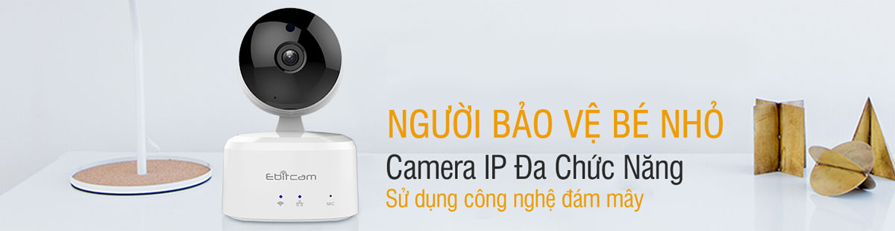
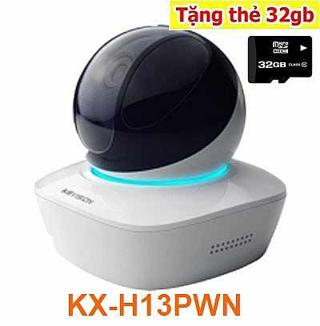
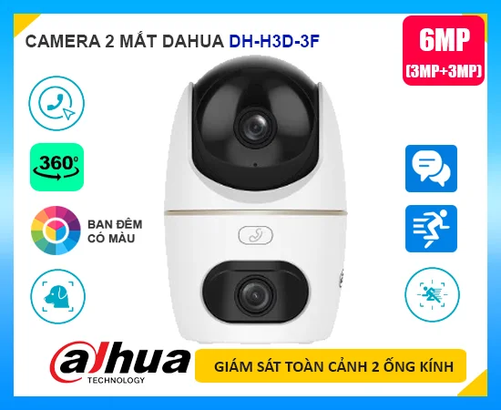

LẮP CAMERA GIÁM SÁT VĂN PHÒNG NHA TRANG

Lắp camera giám sát văn phòng tại Nha Trang là một trong những dịch vụ công ty camera An Thành phát triển khai thông thường sử dụng cho những công ty dịch vụ có văn phòng đặt tại trụ sở Nha Trang. Thông thương camera giám sát văn phòng thường sử dụng những gói camera thông dụng giá rẻ, tùy vào đặt điểm của mỗi văn phòng có thể nâng cấp lên 1 camera có thu âm để phù hợp việt giám sát quản lý nhân viên, Lắp camera giám sát văn phòng tại Nha Trang giá rẻ giám sát từ xa qua điện thoại ổn định là tiêu chí hàng đầu.
LẮP CAMERA GIÁM SÁT GIA ĐÌNH NHA TRANG

Lắp camera giám sát gia đình giá rẻ là một trong những giải pháp bảo vệ An Ninh hiệu quả cho gia đình được lựa chọn hàng đầu ngày nay. Lắp camera giám sát gia đình tại Nha Trang thường sử dụng những thương hiệu camera quan sát chất lượng sử dụng lâu dài, Giám sát qua điện thoại từ xa ổn định là tiêu chí đặt lên hàng đầu khi lắp camera gia đình tại Nha Trang. Giá rẻ lá một phần tiêu chí ổn định khi giám sát từ xa là giá trị quan trọng hơn để đảm bảo an nhinh cho gia đình bạn tại Nha Trang. An Thành Phát Luôn bên bạn khi cần.
LẮP CAMERA GIÁM SÁT CỬA HÀNG TẠI NHA TRANG

Lắp camera giám sát cửa hàng tại Nha Trang thường sử dụng những gói camera giá rẻ phù hợp với từng nhu cầu kinh doanh, Thông thường cửa hàng sử dụng gói camera 4,5tr bộ 4 camera chất lượng hình ảnh FULL HD 1080P, Lắp camera giám sát cửa hàng tại Nha Trang bảo hảnh 24 tháng tận nơi dịch vụ tốt nhất đổi sản phẩm trong 12 tháng nếu lỗi về thiết bị duy nhất tại An Thành Phát, Công ty lắp camera cửa hàng giá rẻ tại Nha Trang uy tín hàng đầu dịch vụ tốt nhất giải pháp giám sát quản lý cửa hàng hiệu quả. Lắp camera cửa hàng tại Nha Trang nhiều kinh nghiêm.
LẮP ĐẶT CAMERA NHÀ XƯỞNG NHA TRANG

Lắp camera giám sát nhà xưởng tại Nha Trang An Thành Phát có nhiều kinh nghiệm lắp camera giám sát hiệu quả giám sát từ xa, dịch vu lắp camera nhà xưởng giá rẻ dịch vụ tốt giám sát từ xa hiệu quả, Lắp camera giám sát tại Nha Trang giá rẻ chuyên dụng cho nhà xưởng, Công ty lắp camera giám sát nhà xưởng nhiều kinh nghiệm giá rẻ hiệu quả giám sát từ xa ổn định , camera rõ nét tiết kiệm chi phí, Lắp camera nhà xưởng tại Nha Trang với quy mô lớn giám sát qua điện thoại quản lý từ xa, Công ty camera An Thành Phát chuyên lắp camera nhà xưởng giá rẻ tại Nha Trang.
LẮP CAMERA GIÁM SÁT KHO NHA TRANG

Lắp camera giám sát kho hàng Nha Trang công ty camera An Thành Phát luôn tư vấn khách hàng sử dụng những dòng sản phẩm camera chính hãng , Dịch vụ lắp camera quan sát kho hàng chất lượng uy tín nhất tại Nha Trang dịch vụ tốt và ổn định giúp giám sát quản lý kho hàng từ xa ổn định sử dụng camera quan sát chính hãng chất lượng tốt trong điều kiện thiếu sáng, giúp giám sát chi tiết khi cần. Nha Trang là một trong những khu vực tập trung nhiều kho hàng lớn và giải pháp giá rẻ tiết kiệm luôn được đặt lên hàng đầu khi lắp camera kho hàng tại Nha Trang.
LẮP CAMERA GIÁM SAT QUA ĐIỆN THOẠI NHA TRANG

Lắp camera giám sát tại Nha Trang qua điện thoại từ xa hiện nay đa phần là su hướng để đảm bảo an ninh gia đình văn phòng, tuy nhiên lựa chọn những dòng camera giám sát từ xa ổn định là điều cần thiết, dĩ nhiên hiện nay camera giám sát nào cũng có thể xem qua mạng từ xa bằng điện thoại , còn vấn đề ổn định hay không là do công nghệ cấu thành. để tìm hiểu thêm bạn Điện Thoại: 0938 11 23 99 để được tư vấn lựa chọn những dòng camera quan sát phù hợp ổn định khi xem từ xa bằng điện thoại. Giải pháp tên miền hay Cloud đều có những ưu điểm riêng.
LẮP ĐẶT CAMERA TRÔNG TRẺ NHA TRANG

Lắp camera giám sát trẻ nhỏ tại Nha Trang thường lắp đặt ở những căn hộ nhà riêng , đặt biệt với những gia đình mới sinh em bé thuê người giúp việc hoàn toàn không yên tâm do đó việc lắp camera giám sát trẻ để đảm bảo tình trạng con được chăm sóc tôn an tâm hơn trong công việc, Lắp camera giám sát trẻ nhỏ ở Nha Trang công ty camera An Thành Phát thường tư vấn lắp đặt những camera giám sát có thích hợp micro ghi âm để có thể nghe âm thanh từ điện thoại.
LẮP CAMERA WIFI TẠI Nha Trang GIÁ RẺ

Lắp đặt camera wifi tại Nha Trang thường dùng lắp đặt cho những dự án nhỏ như, Lắp camera wifi văn phòng nhỏ giá rẻ tại Nha Trang, lắp camera giám sát gia đình tại Nha Trang thường dùng 1 hoặc 2 camera. lắp camera wifi cho căn hộ tại Nha Trang đây là những giải pháp lắp camera tiết kiệm chi phí trên địa bàn Nha Trang sử dụng camera quan sát wifi không dây giám sát qua mạng điện thoại là chủ yếu,Lắp camera wifi tại Nha Trang giá rẻ tiết kiệm chi phí.
LẮP CAMERA QUÁN ĂN TẠI NHA TRANG

Lắp camera giám sát quán ăn , nhà hàng tại Nha Trang ngày nay cũng phát triển mạnh, thông thường lắp camera quán ăn tại Nha Trang công ty thường sử dụng những dạng camera thân ống hồng ngoại hổ trợ giám sát chế độ thiếu ánh sáng tốt, Việc lắp đặt camera quan sát cho quán ăn tại Nha Trang thường lắp đặt nhanh gọn đảm bảo nhà hàng quán ăn vẫn hoặt động trong suốt quá trình lắp đặt camera tại Nha Trang, Những vị trí lắp camera quán ăn tại Nha Trang như, quày thu ngân, trông xe, kho nguyên vật liệu và sảnh.
Bạn đang băn khoan tìm nhà cung cấp :
Tại thị trường Camera Nha Trang có rất nhiều cá nhân và công ty lắt đặt Camera Nha Trang nhưng bạn đang phân vân không biết trọn cty nào uy tín, sản phẩm chất lượng chính hãng hay giá cả và hậu mãi về sau, hãy yên tâm đến với Cty chúng tôi An Thành Phát Camera Nha Trang để được tư vấn, giá cả cạnh tranh, hẫu mãi bảo hành tận nơi trong 12 tháng đầu sử dụng và bảo hành thiết bị 24 tháng .

Công ty Phân Phối Camera An Thành Phát chuyên phân phối camera quan sát KBVISION tại nha trang với chiết khấu cao bảo nhanh nhanh chống, phục vụ tốt nhất , Với hơn 4 năm là đối tác của thương hiệu camea KBVISION trên toàn quốc An Thành Phát có nhiều chính sách tốt nhất và ưu đãi lớn từ chính hãng camera KBVISION Tại Nha Trang.
Là nhà phân phối lớn thương hiệu camera KBVISION tại Nha Trang , An Thành Phát luôn có những bộ phận kỹ thuật chuyên ngành, Hiểu biết sâu sắc về thương hiệu camera KBVISION USA để hổ trợ khách hàng là đại lý những công trình camera lớn tại tp Nha Trang.
 PHÂN PHỐI CAMERA HIKVISION NHA TRANG
PHÂN PHỐI CAMERA HIKVISION NHA TRANG Công ty camera An Thành Phát là một trong nhưng đối tác lớn của thương hiệu camera HIKVISION tại thị trường Việt Nam, Đặt biệt tại khu vực TP nha trang là nhà phân phối chính thức với chiết khấu cao, Sử dụng camera HIKVISION tại Nha Trang do công ty camera An Thành Phát cung cấp bạn sẽ hài lòng về dịch vụ hổ trợ kỹ thuật và sau bán hàng.

Nha Trang là một thành phố ven biển và là trung tâm chính trị, kinh tế, văn hóa, khoa học kỹ thuật và du lịch của tỉnh Khánh Hòa, Việt Nam.
Camera An Thành Phát chi nhánh tại Nha Trang chuyên tư vấn lắp đặt camera quan sát chất lượng, dịch vụ, giá hợp lý tại thị trường Nha Trang, Khánh Hòa.
Ngoài ra đến với Camera An Thành Phát bạn được cung cấp , tư vấn lắp đặt camera quan sát với chi phí tận nơi với chi phí hiệu quả nhất. Hệ thống camera chúng tôi lắp đặt đáp ứng đầy đủ nhu cầu của khách hàng về việc giám sát an ninh, theo dõi từ xa qua internet, điện thoại di động smartphone, máy tính bảng với tốc độ truy cập cao, độ nét theo chuẩn full hd.
Với việc lắp đặt camera quan sát, bạn có thể quan sát mọi lúc mọi nơi, ngay khi đang đi du lịch hay đã rời khỏi nơi làm việc, lắp đặt camera quan sát còn cho phép theo dõi qua mạng internet, lưu lại hình ảnh phục vụ cho việc xem xét lại, làm bằng chứng nếu có vấn đề xảy ra.
Camera quan sát An Thành Phát thế hệ mới sử dụng công nghệ tiên tiến nhất của SONY như độ nét hình ảnh với chip cảm biến CMOS SONY/CCD SONY EFFIO, đèn hồng ngoại LED ARRAY gấp 10 lần loại thường. Đầu ghi hình thế hệ mới An Thành Phát giúp bạn xem camera qua internet dễ dàng hơn bằng công nghệ điện toán đám mây. Khách hàng không cần phải thuê tên miền hàng năm của DDNS Chuẩn nén dữ liệu D1/CIF/QCIF giúp lưu trữ thời gian lâu hơn so với đầu ghi thường.

Phân phối camera Dahua giá rẻ dịch vụ Phân phối camera Dahua chất lượng tại nha trang, Dahua là một trong top 3 thương hiệu camera quan sát hàng đầu thế giới với công nghệ camera HD CVI với chất lượng hình ảnh trung thực sắc nét, Thương hiệu camera Dahua là một sở hữu nhiều bằng sáng chế về camera quan sát ứng dụng trong nhiều lĩnh vực khác nhau. Công ty camera An Thành Phát phân phối camera Dahua tại thị trương TP Nha Trang với chính sách và dịch vụ tốt nhất, bộ phân kỹ thuật hổ trợ với công nghệ mới chất lượng tốt tại Nha Trang.
 PHÂN PHỐI CAMERA VANTECH NHA TRANG UY TÍN
PHÂN PHỐI CAMERA VANTECH NHA TRANG UY TÍN Thương hiệu camera vantech Nha Nha trang nhà phân phôi camera chất lượng uy tín, dịch vụ bán và phân phối camera Vantech Nha Trang chiết khấu lớn thực hiện những chính sách bảo trì bảo hành camera quan sát cho đại Lý Tại TP Nha Traang uy tín.
Camera Vantech là một trong những thương hiệu camera Việt với chính sách Bảo Hành đến 5 năm đặt biệt tại TP Nha Trang công ty An Thành Phát có chính sách đổi trả camera quan sát trong 1 tháng đầu tiên nếu lỗi về camera quan sát do kỹ thuật của hãng. Thương hiệu camera vantech với nhiều công nghệ được áp dụng trong hệ thống camera quan sát dễ dàng triển khai trong nhiều hệ thống mới chất lượng dịch vụ tốt. Đển với An Thành Phát nhà phân phối camera lớn uy tín tại Nha Trang.
Giá Khuyến Mại: 2,100,000 VNĐ
Giá Bán: 2,750,000 VNĐ
Lắp đặt camera IP wifi ngoài trời VANTECH VT-6600C là sản phẩm camera IP Wifi mới, độ phân giải 2.0 megapixel - HD1080P, cho góc xoay rộng đến 310 độ, xoay lên xuống 90 độ cùng chức năng xem qua mạng, qua điện thoại, ipad dễ dàng, kết nối wifi rất tiện dụng, quan sát ngày đêm cho tầm nhìn xa 10m, đơn giản và dễ dàng sử dụng với chức năng cắm vào nguồn điện là hoạt động (Plug & Play) phù hợp sử dụng cho ngoài trời chịu mưa nắng , kho hàng , nhà xưởng , công trình ...v....v.....
Giá Khuyến Mại: 2,000,000 VNĐ
Giá Bán: 2,980,000 VNĐ
Lắp đặt Camera IP Robot KBVISION KX-H10PWN là dòng camera IP không dây với nhiều tính năng độc đáo được kết hợp trên 1 chiếc camera, quan sát rõ nét, có khe cắm thẻ nhớ hỗ trợ lên tới 64GB, camera phù hợp lắp đặt cho việc trông trẻ em, nhà thuốc tây, nhà ở, quan sát người làm việc....
Giá Khuyến Mại: 2,300,000 VNĐ
Giá Bán: 2,950,000 VNĐ
Lắp đặt Camera IP hồng ngoại không dây độ phân giải 1.3 Megapixel KBVISION KX-1301WN Cảm biến hình ảnh: 1/3 inch Aptina progressive scan CMOS ,Kết nối WIFI chuẩn Wi-Fi (IEEE802.11b/g/n) khoảng cách 50 mét không vật cản ,Chuẩn nén hình ảnh: H.264 và MJPEG dùng quan sát ngoài trời chịu mưa chịu nắng ...v...v...phù hợp lắp cho khu phố , gia đình ngoài trời , kho hàng , kho xưởng , nhà xưởng ...v...
Giá Khuyến Mại: 1,400,000 VNĐ
Giá Bán: 1,930,000 VNĐ
Lắp đặt Camera IP DS-2CV2U01EFD-IW hình ảnh HD720P, nhìn xa 5-10m, hỗ trợ các tính năng chống ngược sáng kỹ thuật số, tích hợp Micro, loa đàm thoại 2 chiều. Sản phẩm camera IP không dây này cho chất lượng, gọn nhẹ, dễ sử dụng đảm bảo hài lòng khách hàng khó tính nhất. Đây là dòng camera all in one của hãng HIKVISION với nhiều tính năng độc đáo được kết hợp trên 1 chiếc camera, quan sát rõ nét, có khe cắm thẻ nhớ hỗ trợ lên tới 128GB, camera phù hợp lắp đặt cho việc trông trẻ em, nhà thuốc tây, nhà ở, quan sát người làm việc....
Giá Khuyến Mại:
Giá Bán: 2,470,000 VNĐ
Camera IP WIFI DAHUA DH-IPC-K15P độ phân giải 1.3mp chuyên dùng cho khách hàng lắp cho văn phòng kết nối wifi không cần đi dây camera hổ trợ âm thanh 2 chiều quan sát siêu nét .
Giá Khuyến Mại:
Giá Bán: 3.000.000
Camera IP WIFI DAHUA DH-IPC-C26EP co chuyên dùng cho khách hàng cần lắp camera wifi không cần đi dây tiết kiệm chi phí dễ dàng lắp đặt , độ phân giải lên đến 2.0MP FULL HD siêu nét chất lượng cao ,
Giá Khuyến Mại: 2,500,000 VNĐ
Giá Bán: 2.930.000
Camera IP Hikvision DS-2CV2Q21FD-IW hình ảnh HD1080P, nhìn xa 5-10m, hỗ trợ các tính năng chống ngược sáng kỹ thuật số, tích hợp Micro, loa đàm thoại 2 chiều. Sản phẩm camera IP không dây này cho chất lượng, gọn nhẹ, dễ sử dụng đảm bảo hài lòng khách hàng khó tính nhất. Đây là dòng camera all in one của hãng HIKVISION với nhiều tính năng độc đáo được kết hợp trên 1 chiếc camera
Giá Khuyến Mại: 3,100,000 VNĐ
Giá Bán: 3,650,000 VNĐ
camera quan sát wifi không dây HIKVISION DS-2CD2420FD-IW là camera IP mini công nghệ mới, độ phân giải HD cho hình ảnh sắc nét, chất lượng cao, đèn hồng ngoại thông minh, mẫu mã thu hút khách hàng và dễ dàng sử dụng, có nhiều tính năng ưu việt giúp người tiêu dùng có thể quản lý gia đình và công việc một cách hiệu quả.
CÔNG TY CÔNG NGHỆ AN THÀNH PHÁT CHUYÊN:
Lắp đặt camera tại Nha Trang dùng để quan sát trong nhà, ngoài trời, showroom, cửa hàng, siêu thị, xưởng sản xuất, văn phòng, khách sạn, trường học, cơ quan nhà nước, … tại nha trang
Sửa chữa camera nha trang, bảo trì camera nha trang với chi phí thấp, nhanh chóng và chất lượng.
Hệ thống camera Nha Trang do Cty Công Nghệ An Thành Phát lắp đặt hoạt động liên tục 24/24, quan sát cả ngày và đêm:
Quan sát những vị trí, khu vực quan trọng của công ty, khách sạn, resort, quán cafe ( góc khuất, cửa ra vào, khu vực hàng hóa, kho, nhà xe, hành lang, hàng rào, …)
Giám sát toàn bộ hoạt động diễn ra trong khu vực lắp đặt camera
Đảm bảo tài sản, hàng hóa không bị thất thoát, mất cắp.
Quan sát từ xa qua internet bằng máy tính hoặc thiết bị di động như điện thoại, máy tính bảng...
Xem lại hình ảnh đã diễn ra khi có sự cố, xử lý sự cố, điều hành sản xuất từ xa.
Camera Nha Trang, nên lắp đặt ngay tại An Thành Phát Nha Trang

Lắp camera wifi tại Nha Trang KX-H13PWN Xoay 360 độ
- Ưu Điệm của dòng camera này là hình ảnh sáng đẹp, dễ sử dụng, kết nối camera qua điện thoại dễ dàng và dễ sử dụng. Góc nhìn rộng 850 độ Xoay 360 độ và xoay đứng 90 độ đây là ưu điểm của dòng camera này, Hồng ngoại hổ trợ ban đêm nhìn xa 20m sáng đẹp. Tặng thẻ nhớ lưu trữ 32 GB lưu được 4-5 ngày cho camera chất lượng HD bạn có thể giám sát đến 1/2 bán cầu với camera này , Thường sử dụng cho những sảnh lớn phục vụ giám sát quản lý.
-Lắp camera wifi cho Nha Trang tại Sảnh khách sạn, cửa hàng rộng tại Nha Trang hoặc văn phòng giám sát nhân viên tại các tòa nhà. Tiết kiệm chi phí hiệu năng cao khi lắp dặt 1 hoặc 2 camera xoay 360 độ. Bạn có thể chọn lưu trữ lâu hơn với thẻ nhớ nâng cấp đến 128 GB ( từ 20-30 ngày) Liên hệ tư vấn lắp camera wifi tại Nha Trang 0938 11 23 99.
Giá lắp 1 camera wifi Nha Trang: 2.800.000
Giá lắp 2 camera wifi Nha Trang: 5.500.000
Giá lắp 3 camera wifi Nha Trang: 8.250.000
Giá lắp 4 camera wifi Nha Trang: 10.900.000

Lắp Camera Quan sát Tại TP Nha Trang An Thành Phát luôn lấy chất lượng sản phẩm để phục vụ cho khách hàng, Công ty chuyên Lắp Camera quan sát chính hãng tại TP Nha Trang với giá rẻ chiết khấu cao.
Với năm 2018, Mỗi nhà đều sở hữu 1 bộ camera quan sát là điều rất dễ dàng. nhiều người đã từng ví camera sẽ cần thiết như 1 cái Smartphone. Việc lắp camera tại nha trang cho phép bạn quan sát tại bất kỳ đâu, ngay khi bạn đang ngồi nơi công sở hoặc đi du lịch. Trong số các công ty lắp đặt camera Nha Trang thì An Thành Phát Nha Trang là công ty chú trọng về giải pháp sản phẩm, lợi ích cho khách hàng. Một sản phẩm tại chúng tôi phải đạt đủ tiêu chí: Độ ổn định, tiết kiệm, sử dụng lâu dài. An Thành Phát Nha Trang xin chỉ ra các lợi ích của việc lắp camera cho quý khách hiểu hơn về hệ thống camera quan sát tại Nha Trang
Nhu cầu của bạn cần khi lắp Camera Nha Trang:
Giám sát nhân viên của mình khi bạn có việc ra ngoài.
Giám sát được con trẻ.
Có bằng chứng khi phát hiện ra trộm vào nhà.
Tạo nên sự uy thế và an toàn cho doanh nghiệp.
Tạo nên tính răn đe .
Bạn băn khoăn
Quản trị, vận hành camera Nha Trang ( An Thành Phát Nha Trang ) phức tạp ?
Triển khai trong thời gian dài với chi phí cao?
Các đơn vị khi lắp đặt xong sẽ bỏ luôn khách hàng, không hỗ trợ, gọi không đến
Lắp Đặt Camera Nhận Diện Biển Số Xe

Hệ thống camera nhận diện biển số xe hiện là một công nghệ mới được sử dụng nhiều nhất hiện nay. Hệ thống sử dụng camera nhận diện biển số xe có khả năng phát hiện, nhận dạng và so sánh giữa biển số xe được phát hiện với biển số xe đã có sẵn trong cơ sở dữ liệu giải pháp này đóng vai trò quan trọng đối với lĩnh vực an ninh giao thông, bảo mật an ninh, quản lý luồng giao thông, quản lý bãi đậu xe, phòng chống tội phạm, xử lý vi phạm giao thông…
Lắp Đặt Hệ Thống Phòng Cháy Chữa Cháy - Thiết Bị PCCC

Ngày nay, trang bị lắp đặt hệ thống phòng cháy chữa cháy là một trong những việc quan trong nhất mà bạn cần làm, nhất là đối với các mô hình nhà ở cho thuê, nhà cao tầng, ví dụ như: nhà trọ, chung cư, nhà xưởng hay các tòa nhà cao tầng cho thuê, .
Sửa Chữa Camera Quan Sát Tận Nơi Cấp Tốc 24/24

Ắt hẵn rằng trong quá trình sử dụng camera quan sát thì chúng ta sẽ không tránh khỏi tình trạng bị hư hỏng hay xảy ra lỗi gây gián đoạn giám sát an ninh. Có thể bạn còn đang loay hoay trong việc tìm kiếm nơi để sửa chữa camera uy tín, đừng lo lắng, An Thành Phát sẽ đồng hành cùng bạn với dịch vụ bảo trì, sửa chữa camera cấp tốc tận nơi chuyên nghiệp mà chi phí lại rẻ
Di dời camera là một nhu cầu không thể thiếu đối với mỗi khách hàng sử dụng camera quan sát, đặc biệt nhiều nhất là các văn phòng công ty, nhà xưởng hay các nơi ở cho thuê như nhà trọ, chung cư. Vậy chi phí tháo lắp di dời camera có mắc không, mất nhiều thời gian không? Mời các bạn cùng xem qua thông tin dịch vụ dưới đây nhé!
Lắp camera quan sát bảo vệ an ninh là một trong những nhu cầu vô cùng cần thiết đối với mỗi người. Tuy nhiên việc đứng trước một thế giới camera thì bạn sẽ bị lạc lỏng, phân vân và không biết nên lựa chọn như thế nào cho phù hợp với túi tiền mà vẫn đảm bảo được chất lượng
Trung tâm dịch vụ bảo hành sửa chữa camera Imou của An Thành Phát là địa chỉ uy tín và chuyên nghiệp, được khách hàng tin tưởng lựa chọn. Với đội ngũ kỹ thuật viên giàu kinh nghiệm, trung tâm cam kết mang đến dịch vụ nhanh chóng, chính xác, đảm bảo chất lượng
Camera ban đêm có màu không cần đèn trợ sáng là một dòng camera ghi hình được áp dụng công nghệ hiện đại mới nhất, tuy không cần đèn hay bất kỳ ánh sáng hỗ trợ nào nhưng camera vẫn đem lại hình ảnh có màu sắc sáng đẹp, chân thực. Điều đó có thật sự đúng không? An Thành Phát mời các anh chị em, cô chú bác cùng nhau làm rõ về công nghệ camera có màu ban đêm không cần đèn này nhé!
Như bạn đã biết thì việc giám sát an ninh đảm bảo an toàn về tài sản và con người là một điều rất cần thiết, nhất là tại các hộ gia đình, các văn phòng làm việc hay các cửa hàng...
Khi đề cập đến việc giám sát an ninh thì khu vực ngoài trời hiện đang là một vấn đề nan giải đối với mỗi hộ gia đình hay cửa hàng nhỏ lẻ. Hiện nay có một giải pháp được cho là giám sát an ninh ngoài trời tối ưu đó là lắp camera IPC,S21FP, một sản phẩm đến từ thương hiệu Imou
Nếu bạn là một tín đồ về sử dụng camera quan sát an ninh thì không thể bỏ qua chiếc camera wifi giá rẻ quốc dân được sử dụng nhiều tính từ năm 2021 cho đến nay. Vậy camera Ezviz...
Hiện nay, để giúp cho việc giám sát và bảo vệ an ninh dễ dàng hơn hiệu quả hơn thì camera wifi không dây đã được ra mắt và mang đến một giải pháp vô cùng tối ưu. Điển hình là...
Hãy yên tâm lựa chọn hệ thống Camera Nha Trang quan sát của An Thành Phát Nha Trang chúng tôi vì:
Chúng tôi là 1 trong 3 đơn vị lắp camera tại Nha Trang được thành lập từ năm 2011 với hơn 1500 khách hàng lớn nhỏ, tỉ lệ hài lòng không được 100% nhưng luôn cam kết trên 90% và chúng tôi luôn cố gắng hoàn thiện hơn nữa
Trong hơn 1500 khách hàng của chúng tôi, chúng tôi chưa bao giờ từ bỏ hỗ trợ 1 khách hàng nào dù có những đơn vị đã lắp đặt được 5 năm.
An Thành Phát Nha Trang triển khai nhanh, chi phí thấp ( thời gian lắp đặt 4 camera khoảng 4 tiếng và chi phí đầu tư trọn gói là 5.200.000VND )
Chúng tôi hướng dẫn tận tình cho khách hàng cách sử dụng đến khi khách hàng rành thì mới thôi
Hệ thống camera của An Thành Phát Nha Trang với chi phí đúng với giá trị của sản phẩm khiến cho khách hàng có thể an tâm.
Được bảo hành 12 tháng ( 1 đổi 1 ), không sửa chữa, vì thế khách hàng nào cần lắp camera tại nha trang cứ an tâm, vì hàng điện tử sẽ rất dễ bị lỗi lại nếu sửa chữa
Chúng tôi không bán những sản phẩm giá quá rẻ, dễ hỏng hóc lặt vặt trong khi sử dụng, chúng tôi chỉ bán những sản phẩm chất lượng ổn định với mức giá phù hợp
Nếu muốn lắp Camera tại Nha Trang, hãy liên hệ với chúng tôi để có được sản phẩm tốt nhất.
Địa danh lắp đặt camera quan sát Nha Trang Miễn Phí
Nha Trang,Phước Tiến (phường),Phương Sài, Phương Sơn (phường),,Tân Lập, Nha Trang,Vạn Thạnh (phường),Vạn Thắng (phường),Vĩnh Hải (phường),Vĩnh Hiệp, Nha Trang, Vĩnh Hòa (phường),Vĩnh Lương,Vĩnh Ngọc, Nha Trang,Vĩnh Nguyên,Vĩnh Phước, Nha Trang,Vĩnh Phương,Vĩnh Thái (phường),Vĩnh Thạnh, Nha Trang,Vĩnh Thọ (phường),Vĩnh Trung, Nha Trang,Vĩnh Trường (phường), Xương Huân
Lắp Đặt Camera Nha Trang Và Toàn Quốc – An Thành Phát Dịch Vụ Tốt Nhất
Camera An Thành Phát Nha Trang tự hào là công ty lắp đặt camera Nha Trang, Cam Ranh, Ninh Hòa, Khánh Hòa hàng đầu hiện nay với chất lượng, giá rẻ nhất. Chúng tôi chuyên cung cấp, lắp đặt các dòng Camera quan sát Wifi IP, ANALOG được áp dụng những công nghệ tiên tiến nhất từ các nhà cung cấp được ưa chuộng hàng đầu như Dahua, Questek, Vantech, Hkvision, Yoosee, KBVISON… Cùng với dịch vụ camera Nha Trang là những giải pháp an ninh khác như hệ thống báo động, báo cháy… mang đến cho bạn những sản phẩm chất lượng hoàn hảo, những giải pháp giúp giám sát an ninh tại gia đình, các công ty tổ chức, điều hành công việc từ xa thông qua camera ghi âm tích hợp cuộc thoại hai chiều… giúp tăng năng suất, hiệu quả công việc… Ngoài ra hiện nay chúng tôi còn cung cấp vòng tay gỗ quý tại Nha Trang, được chế tác từ những loại gỗ quý của Việt Nam.
Bật mí về camera giá rẻ trên thị trường Nha Trang hiện nay!
Hiện nay trên thị trường Nha Trang có rất nhiều loại camera giá rẻ, đáp ứng được nhu cầu của rất nhiều người, tuy nhiên ít có ai biết đến nó có nguồn gốc từ đâu, chất lượng như thế nào.
Hầu hết các sản phẩm này mang tên được người dùng biết đến như camera Yoosee… nhằm đánh lừa người tiêu dùng. Yoosee là một ứng dụng dùng chung cho việc quan sát camera từ xa, bạn chỉ cần lên mạng tìm kiếm là sẽ không bao giờ ra website của nhà sản xuất.
Thật sự đây là các thiết bị được người buôn mua về từ Trung Quốc các linh kiện rời rạc gọi là OEM, sau đó in nhãn mác và lắp ráp lại rồi bán với mức giá rẻ mạt. Việc lắp camera quan sát tại Nha Trang Công ty An Thành Phát khuyên khách hàng không nên chạy theo giá quá rẻ nên sử dụng những thương hiệu camera quan sát uy tín lắp đặt tại tp Nha Trang để đảm bảo dịch vụ tốt hơn.